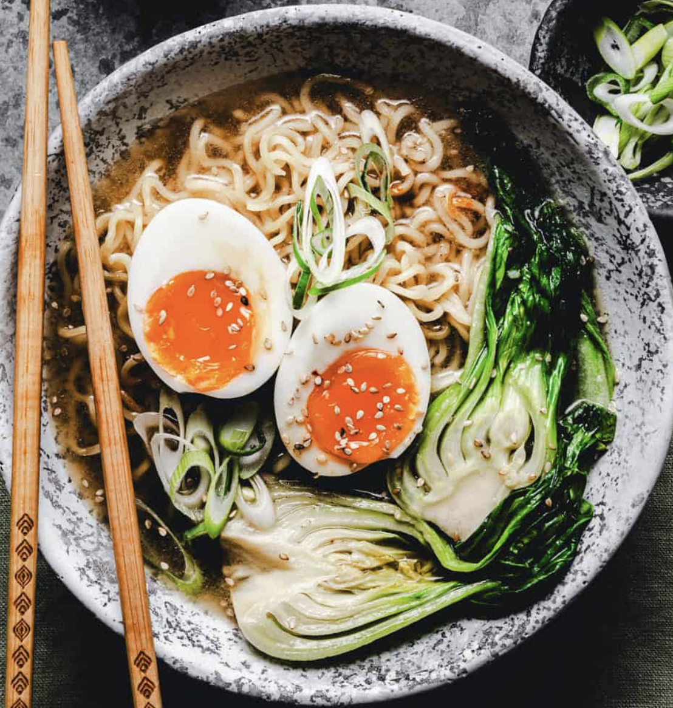

Ramen
From Pinch and Swirl
Click Here for Full Recipe!
Ingredients:
instructions:
- Prepare ice bath for eggs
- Boil water, reduce to medium heat, and put eggs in water
- Lower heat to simmer and cook for 7 minutes
- Transfer eggs to ice bath for 5 minutes
- Boil broth
- Add noodles and cook for 1 minute
- Add ginger, garlic, and bok choy, and cook for 2 minutes
- Remove from heat and add soy sauce and sesame oil
- Peel eggs and cut them in half
- Top with bok choy, eggs, siracha, and green onions